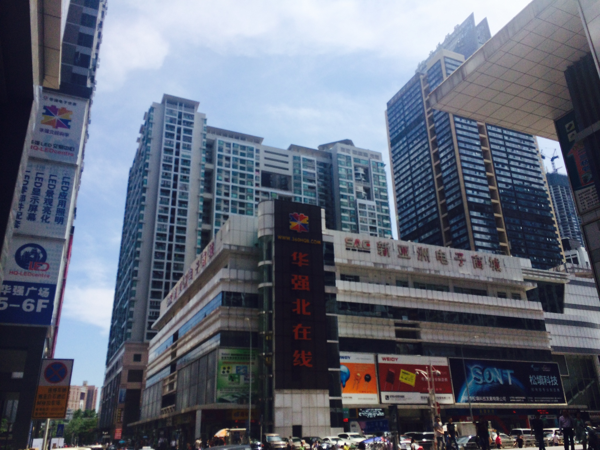
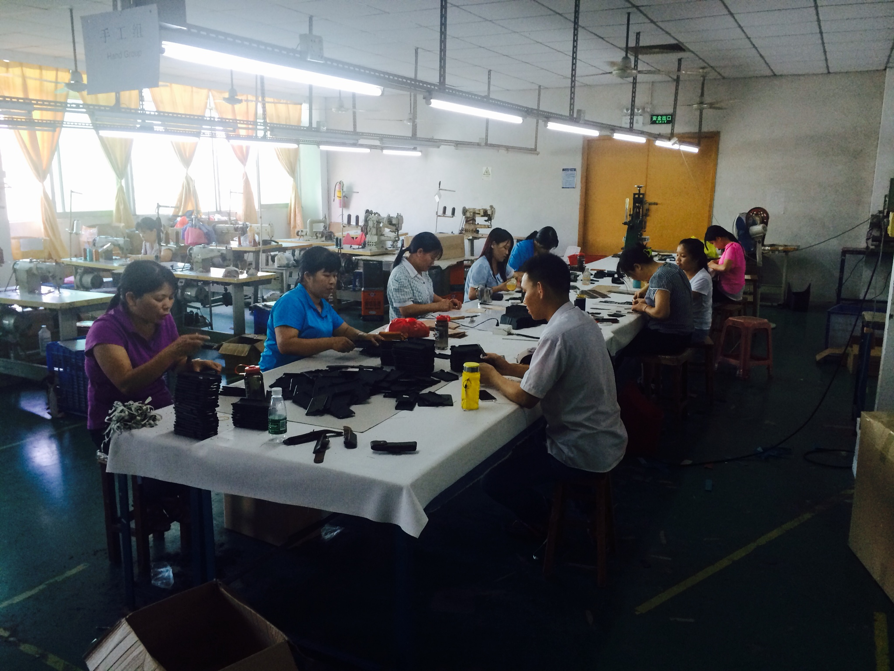

突然有一天，深圳成了创新制造的世界中心，至少我们这么看，当我真正走进深圳，来到这个似乎已经被称为中国硅谷的地方时，与深圳的不期而遇便这样开始了。
我和X姐认识多年，很早以前参与敏捷社区的时候就与她相识，她认识大部分ThoughtWorks中国区的前十位员工，总说我是她失散多年的弟弟，从美国来前，我特地为她的孩子挑选了一本关于美国铁路的画册，而她，已经在深圳建立了自己关于硬件的社区。
这就是这场奇遇的最开始，没有任何计划，把自己放在一个新的环境中沉浸，虚心和耐心的对待每一个接触的人，因为我总觉得，每一位与你相识的人你都不知道未来会和他或她产生什么样的故事，这便是探索的魅力。
我在某个创业产业园的大楼里见到了X，大楼里分布着胶囊般的创业公司，每间房只有不到5平米，创业者聚积在这里，每个人看上去都很轻松，不像是心中有个巨大的梦。我等了X姐一会儿，多年不见的她带着团队上来，依然满身正能量的样子，深圳的速度在于，好像你不需要太多寒暄和排场，对于认同的可能性，人们总会第一时间把自己的资源介绍给你，一句多余的话也没有。
就这样我在第二天便见到了，深圳这个领域的教父，曾经统领着中国最早期的国际IT巨头公司，中国电子制造业元老级人物，老师并没有觉得我这样的年轻人有什么不一样，只是友好地讲讲20年前硅谷和中国的IT业，我也像学生一样静静地听着。
和老师来到一家本土较大的硬件公司，有趣的现象是，虽然我觉得这次访问的规格很高，随行的伙伴们不像我想象中那么重视，不论穿着，访问会议时表现得也颇为随意，有人在旁边讨论，也有人打电话，我没有说什么，仔细听访问公司的创始人讲着公司的成长。
深圳硬件产业的发展依托者几个重要的事件，例如联发科的整体方案推出造就了整个深圳电子零部件和手机行业十年的辉煌，也成就了大批早期创业者。而现在这样改变整个行业的变化却越来越少，在通用电子消费品的长尾下，我们看到的是大量竞争力不足，慢慢落入产业链底端的公司。
这家公司的创始人坦言，缺少差异化和真正满足用户刚需的产品是整个行业面临的问题，消费者已经不像以前那样对电子产品趋之若鹜，很多产品的研发过程都是“拍脑袋”想出来的，到底能不能找到真正的市场却不得而知。
我阐述了我的观点：深圳目前的特点在于产业链完整，成本低，面向的是全世界的客户，而深圳离真正的客户太远，目前只能制造通用性的大众消费品，这样的产品门槛低、换代快、风险大，所以一个还未打开的市场是企业市场。
这也是我一直以来思考的问题，今年3月，迪士尼公司推出了耗资10亿美元的Magicband项目，这个神奇的手环把消费者、设备、游乐园、引导者、消费、会员等等一系列环节的体验整合在了一起，而这样的方案，似乎不是深圳某一家公司能够想到的，满街遍布的手环公司也只能做到产业链的最底端。
事实上硬件产品研发周期长，需要的环节多，深圳的优势是后端大量制造环节的整合，这部分的优势是海外客户所看重的；另一方面，深圳硬件企业也急需这样定制化的解决方案提升其品牌的竞争力，但因为大部分深圳硬件公司国际化程度并不高，这样的对接仿佛很难那么顺畅，此时，咨询的商业机会也就产生了。
在我的商业构想中，如果有一家坐落在深圳的、小的、国际化的硬件领域咨询公司，聚集诸如零售、客户体验、企业级应用、工业产品设计、供应链管理、信息安全、法务和知识产权方面的专家，位于海外的大型客户就可以通过这样一家中国本地“超级代理”完成部分方案设计、调研、技术选型、需求对接、供应商管理、研发外包、生产制造管理、法务和知识产权咨询的需求。
这个商业构想得到了老师的认可，这样一颗小小的种子便在奇遇中慢慢发芽。
接着我们来到了深圳硬件的“朝圣圣地”，接待我们Y先生跟我们介绍着集团的构想。倒不是构想的内容，因为我从未怀疑过中国企业的野心、格局与实干精神，而是这个人本身的特质，他既有潮汕商人的现实，又有大开大阖的企业家精神，只比我大1岁却管理着十亿美元的投资，他脚下这块地方，每天的人流超过整个旧金山市区的人口，财富梦想在每一平方尺中，每天都在上演，而他依然口干舌燥地耐心给光临的每一位伙伴讲他的梦想。

好像这真是个梦想秀的舞台，因为太快，谁也没时间去考虑，这是不是场秀。
我问DD：“你未来想做什么？”，面对一盘我从未吃过的黄焖锅，他浑身是汗，像台刚停下来的老式蒸汽机，他说：“我想做一个百年公司。”
这样的回答是不可思议的，离开新疆之后，DD去了湖南上学，在一个普通的2本学校完成学业之后，和很多人一样，来到了深圳，10年之后，他有了自己的孩子，和一个简单的家庭，而在深圳近十年的硬件工作经验并没有给他带来令人艳羡的生活，而深圳不经意间给他的，却是那个让我惊诧不止的“百年公司”。
他明知道，也许进入一个可能成为“百年公司”的机会都很难。
而我不认为这些是所谓“端着的情怀”，无论是掌管巨额投资的高管还是最底层的从业者，他们年龄相仿，各自怀揣着一个未来，并且依然脚踏实地努力奋进，开心地和别人分享这份快乐，我甚至想，让他们坐在一起，他们会聊什么。
某个星期五的晚上，作为对X的回报，我做了一场培训课程，这个发生在周五晚上7：30到10：30三个小时的培训，吸引了将近100人参加，每个人都需要支付50到100元不等的门票，他们在下班后搭乘拥挤不堪的公共交通前往，只为了听一个在深圳从未有名气的人讲讲自己的体会。
最后的时候，我问了大家一个问题，“过去的6个月里，觉得自己成长了的，请举手”，将近2/3以上的人举起了自己的手，那一刻，每一个在过去两周里遇到的人的脸都在脑中浮现，他们无论是中国IT史举足轻重的人物，还是工作在最底层的从业者，每个人，每个人都在实践着自己想做的事情，无论过去做了什么，这就是深圳最有趣的地方。
不只是这些，还有那些通常无法看到的故事。Alex来自中国最北的黑龙江，我们认识他是因为我的合作伙伴找他购买一些防辐射的电脑包，会一些简单的英文对话，还能在收据上写出一手斜体的英文字体，凭借这些，他似乎在深圳周围的小镇里有一些名气。他带我们来到这些电脑包手机袋的生产工厂，顶着酷热，我们在深圳外60公里的地方，见到了这间厂房的老板。

女工们在刺鼻的车间里用手糊着手机袋，她们不知道那些胶水对自己的侵害，我问她们一天能做多少个，她们说有时五百、有时一千。老板骄傲地给我们展示自己的产品，告诉我们这些产品多被销往发达国家，昨天刚有一个澳大利亚客户来参观，我的心思始终在那些胶水和灰黄的手指上，没有人告诉她们这些胶水也许会对她们的呼吸道或生殖系统产生巨大的危害。
有些无奈，老板问我，美元是不是很值钱？我说越来越值钱的可能是人民币，他很开心地点了点头。我在厂房下的空地发了发呆，直到接我们的车来了，司机告诉我用App把单取消，可以收更便宜的车费，自己也可以挣更多。
当你越去体会这个只有20万本地人口的年轻城市，你越发体会它的真实，它远没还有能够取代硅谷在科技界地位的意思，却有着无数人相信，虽然大部分人甚至不知道硅谷是什么，在这样一种肆意的单纯中，这座城市和她所孕育的年轻人一起，肆意成长。
某天早晨，我梦见自己的手机可以收到Gmail了，突然意识到自己回到了美国，那一刻就像把自己丢到了山中，环顾左右，硅谷和青藤名校的精英们在谈论这个世界会好吗，而世界的另一边，深圳的他们穿着短裤、执拗地学习学习再学习。
我想，不期之遇，后会有期。